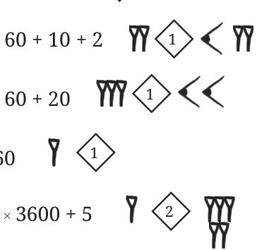
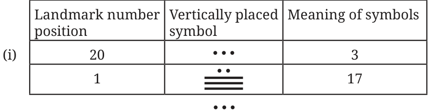
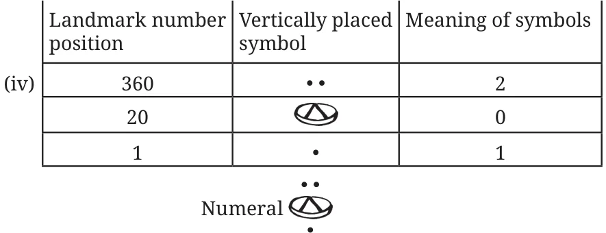

- Can there be a number whose representation in Egyptian numerals has one of the symbols occurring 10 or more times? Why not? Ans. No, its not, because 10 times any landmark number will give the next landmark number.
- Create your own number system of base 4, and represent numbers from 1 to 16. Ans. One of the ways is -
Let \(4^0 = 1 =\) ∟, \(4^1 = 4 = \triangle\), \(4^2 = 16 =\) □
\(1 =\) ∟, \(2 =\) ∟∟, \(3 =\) ∟∟∟, \(4 = \triangle\), \(5 = \triangle\)∟, \(6 = \triangle\)∟∟, \(7 = \triangle\)∟∟∟, \(8 = \triangle\triangle\),
\(9 = \triangle\triangle\)∟, \(10 = \triangle\triangle\)∟∟, \(11 = \triangle\triangle\)∟∟∟, \(12 = \triangle\triangle\triangle\), \(13 = \triangle\triangle\triangle\)∟, \(14 = \triangle\triangle\triangle\)∟∟, \(15 = \triangle\triangle\triangle\)∟∟∟,
\(16 =\) □
Page No. 73
Figure it Out
- Represent the following numbers in the Mesopotamian system -
- 63 (ii) 132 (iii) 200 (iv) 60 (v) 3605 Ans.
- \(63 = 1 \times 60+3\)

- \(132 = 2 \times 60 + 12\)
- \(200 = 3 \times 60 + 20\)
- \(60 = 1 \times 60\)
- \(3605 = 1 \times 60^2 + 0 \times 60 + 5\)
Page No. 76
Represent the following numbers using the Mayan system:
- 77 (ii) 100 (iii) 361 (iv) 721 Ans.

\(77 = (3) \times 20 + (17) \times 1\)

\(100 = (5) \times 20 + (0) \times 1\)

\(361 = (1) \times 360 + (0) \times 20 + (1) \times 1\)

\(721 = (2) \times 360 + (0) \times 20 + (1) \times 1\)
Page No. 80